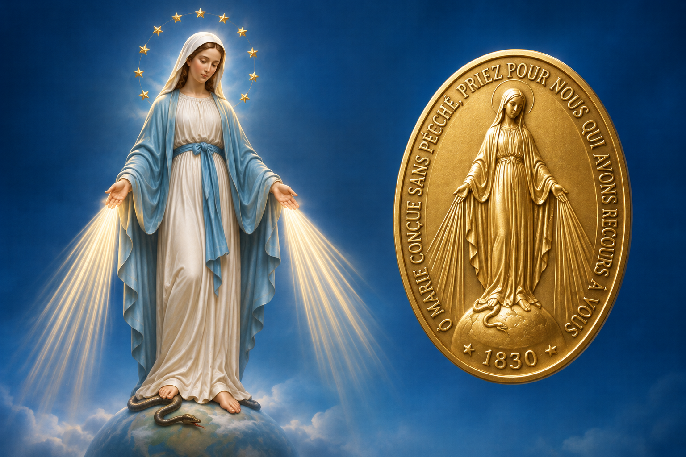
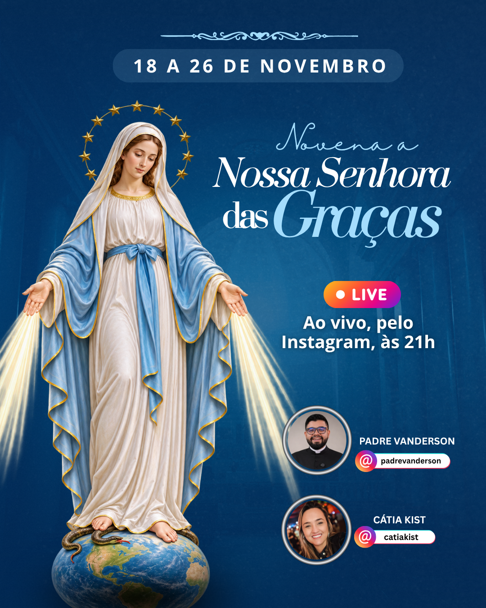

18 A 26 DE NOVEMBRO
Novena de
Nossa Senhora
das Graças
Nove dias de fé, esperança e confiança na intercessão de Maria.
Celebração de Nossa Senhora das Graças • 27 de novembro

✧
“Ó Maria concebida sem pecado, rogai por nós que recorremos a vós.”
Uma caminhada de oração com Maria, que sempre nos conduz a Jesus.NOSSO CAMINHO DE FÉ
Os nove dias da novena
Escolha o dia para acompanhar a oração. Seu progresso fica salvo neste navegador.
CAMINHO DE ORAÇÃO
Primeiro dia
Tamanho do texto
UM CONVITE ESPECIAL
Vamos rezar juntos?
De 18 a 26 de novembro, acompanhe a Novena de Nossa Senhora das Graças todos os dias, às 21h, ao vivo pelo Instagram, com Padre Vanderson e Cátia Kist.

ASSISTA QUANDO QUISER
Gravações da novena
Reveja a oração de cada dia. Os vídeos vão sendo publicados conforme a novena avança.
JUNTOS EM ORAÇÃO
Mural de pedidos de oração
Apresente sua intenção a Nossa Senhora das Graças. Quem visitar este mural também poderá interceder por você.
INTENÇÕES COMPARTILHADAS
✧